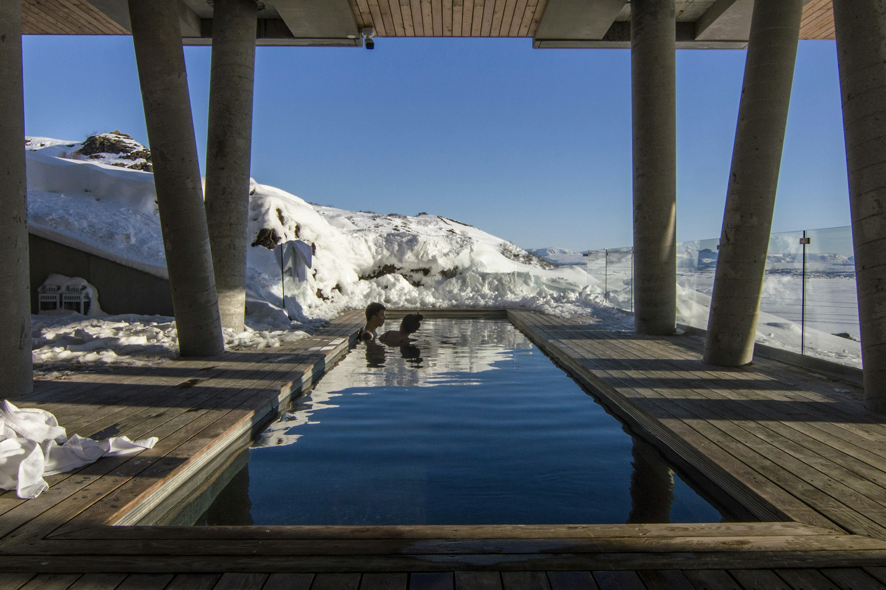
Glacier bath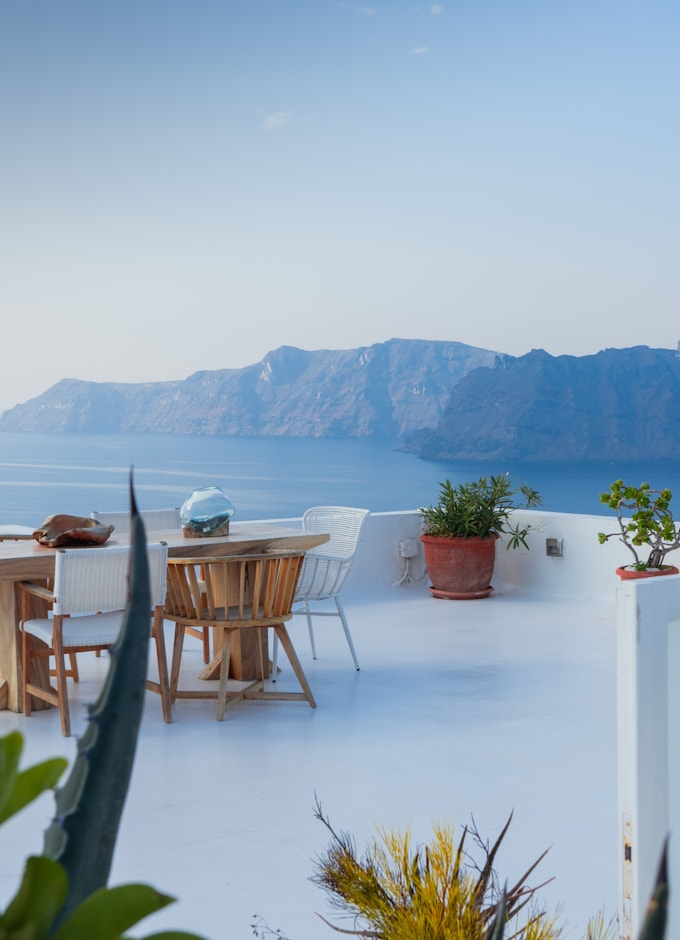
Santorini diningProduct Design Director · August 2026
Experiences that make booking extraordinary.
Two stories about AI, conversion, and craft from the booking funnel of Homes & Villas by Marriott Bonvoy.
I build AI enabled experiences that drive conversion, and teach others to do the same.
I'm a Product Design Director at Publicis Sapient, embedded with Homes & Villas by Marriott Bonvoy since 2020. I direct design, product, engineering, and data teams through work that helped grow platform revenue 10x. Before that I designed for Amazon and Chewy, and spent six years turning a legacy racing parts manufacturer into a digital first brand.
How this deck was built.
I used Claude Code to scrape Velocity.black for CSS values. Then I built a tokens.css file that acted as the source of truth and called the Unsplash API to directly inject luxury travel photography. It's hosted on GitHub and served by Vercel.
Homes & Villas by Marriott Bonvoy
Blended AI Search
A small team, a clear mandate, and beating Airbnb and VRBO to market while we were at it.
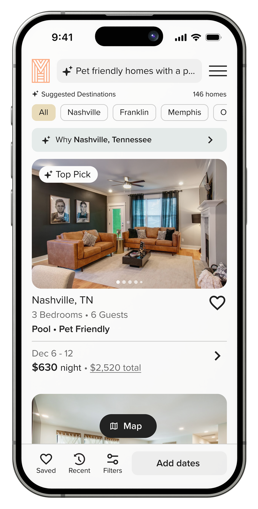
Guests don't dream in filters.
They dream in stories. Traditional travel search forces that into a destination field, and a date picker. So guests were dreaming off platform. They were on sites like Google and Pinterest where a competitor is always just one result away.
Be first. Break nothing.
Our mandate was to be first to market without harming the core business. That meant every decision would be measured against conversion and revenue. We needed to protect the booking funnel at all costs, while also proving technical and financial feasibility, boosting brand visibility and hopefully gathering behavioral data along the way.
First attempt
We immediately broke it.
We won the business, and sold the work on AI chat. Users hated it, and they told us every time we put it in front of them. “It's not what I expected” they'd tell us. Chat carried the stigma of canceling subscriptions and pleading for a human. It added steps between the homepage and results. It turned a simple task like adding destination, dates, and hitting search, into a conversation that nobody was asking for.
The turning point
Changing mental models.
One day while I was iterating on designs, I happened to move the text field from the bottom of the page to the top. And that's when everything clicked. A text field at the bottom of the page reads as chat. The same field at the top reads as search. Move it 800 pixels and the mental model flips.
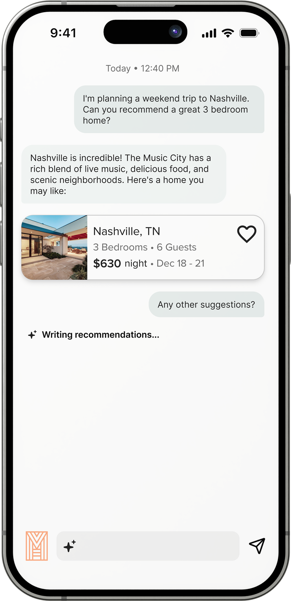
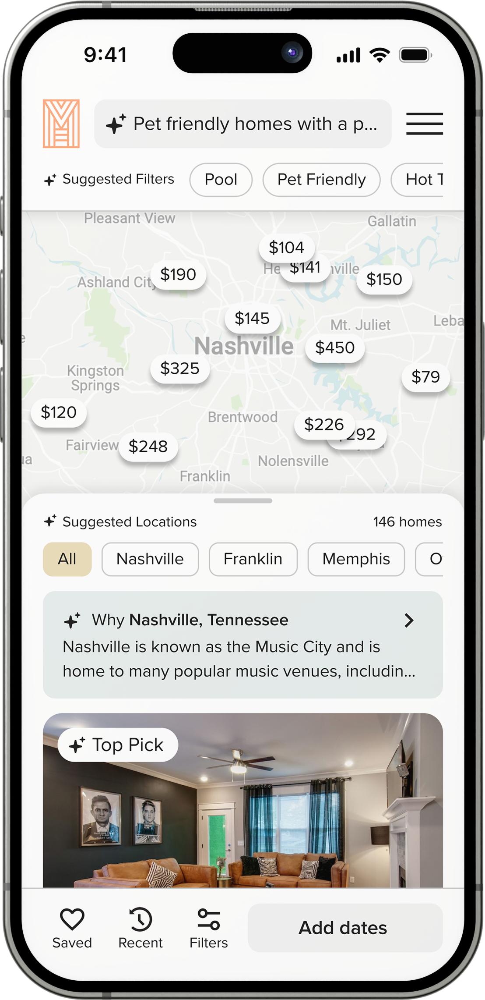
Discovery
Unlocking the really fun stuff.
Once AI lived inside search instead of beside it or in front of it, everything guests were already familiar with got smarter. Generative content blended directly into our results pages. Predictive filtering turned described intent into the filters guests were most likely to be looking for. And AI location recommendations brought the whole research trip inside the funnel, instead of losing guests to Google searches.

The design
Two tabs, one solution.
We could've built a single input that handled both “Paris” and “romantic getaway with Michelin star restaurants.” But that's the auto manufacturer trap. So we made the experiences similar, but different. Destination Search stays fast and familiar. AI Search is exploratory and descriptive.
And the tab boundary created natural drop off points that managed costly AI API calls, which made finance as happy as the guests.
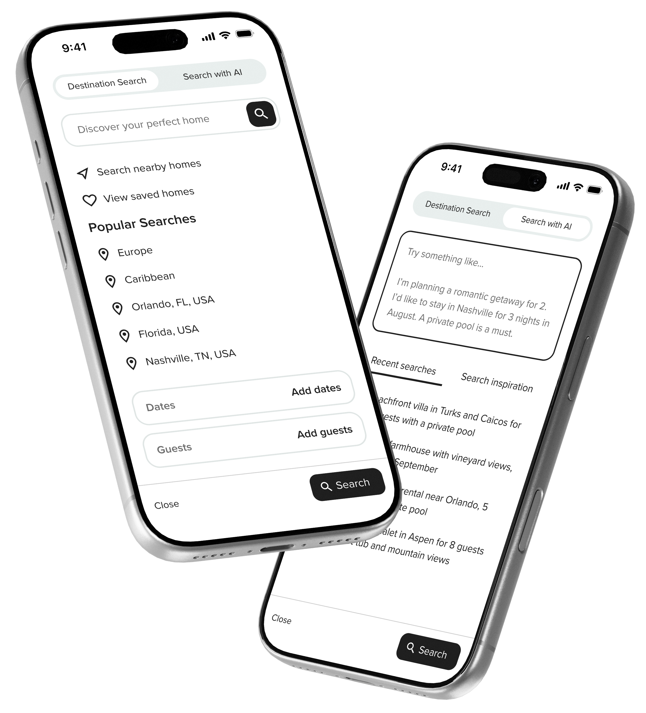
Adoption
Nobody reads prompt tutorials.
Who wants to read instructions ahead of a search experience? Instead, we met guests where they already were. The search field rotated example prompts. We offered gentle guidance on adding locations, trip type, activities, and home features. Loading screens presented trending searches and search tips.
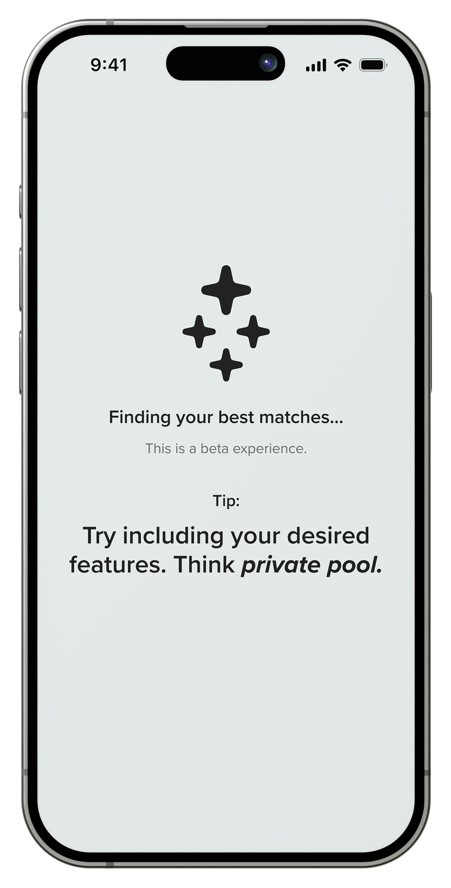
Blended AI Search
To market with a blended AI search experience in travel.
What happened next
Discovery got better. Conversion didn't.
AI was bringing qualified guests into a booking flow built for a different era. So we rebuilt the funnel, end to end.
Homes & Villas by Marriott Bonvoy
Booking Funnel Redesign
Every touchpoint from discovery through confirmation, rebuilt around how guests actually book.
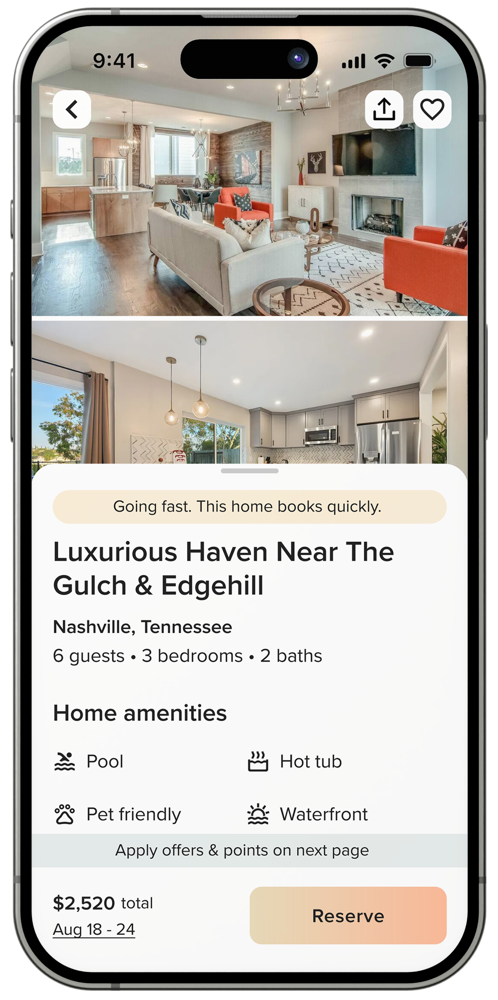
The funnel carried years of neglect and quick fixes.
The issues were obvious to everyone. Booking had once spanned four separate pages. Pricing detail piled up early in the journey. Mobile got a desktop site squeezed onto a phone. We'd just never had the runway for a holistic pass, and incremental fixes kept losing to roadmap math.
This time we committed to all of it.
We rebuilt everything around two principles.
Mobile should feel native, and we should be deliberate about what to show and when.

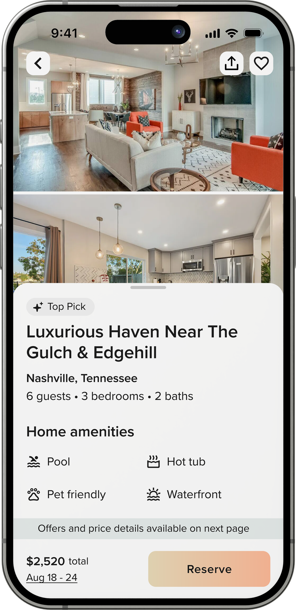
Nearly native
M-web that behaves like a native app.
The property page became two swipeable layers. Guests land on photography with key details in a drawer below. Swipe down to immerse in the gallery, swipe up for amenities and booking. No more endless scrolling, no more hunting for photos. Competing with Airbnb's mobile experience was the whole point.
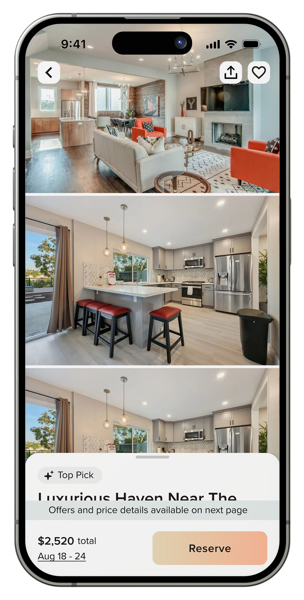
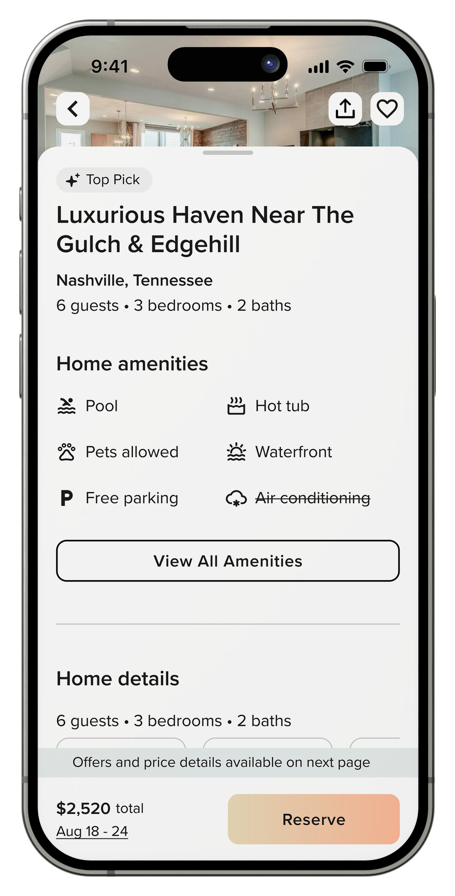
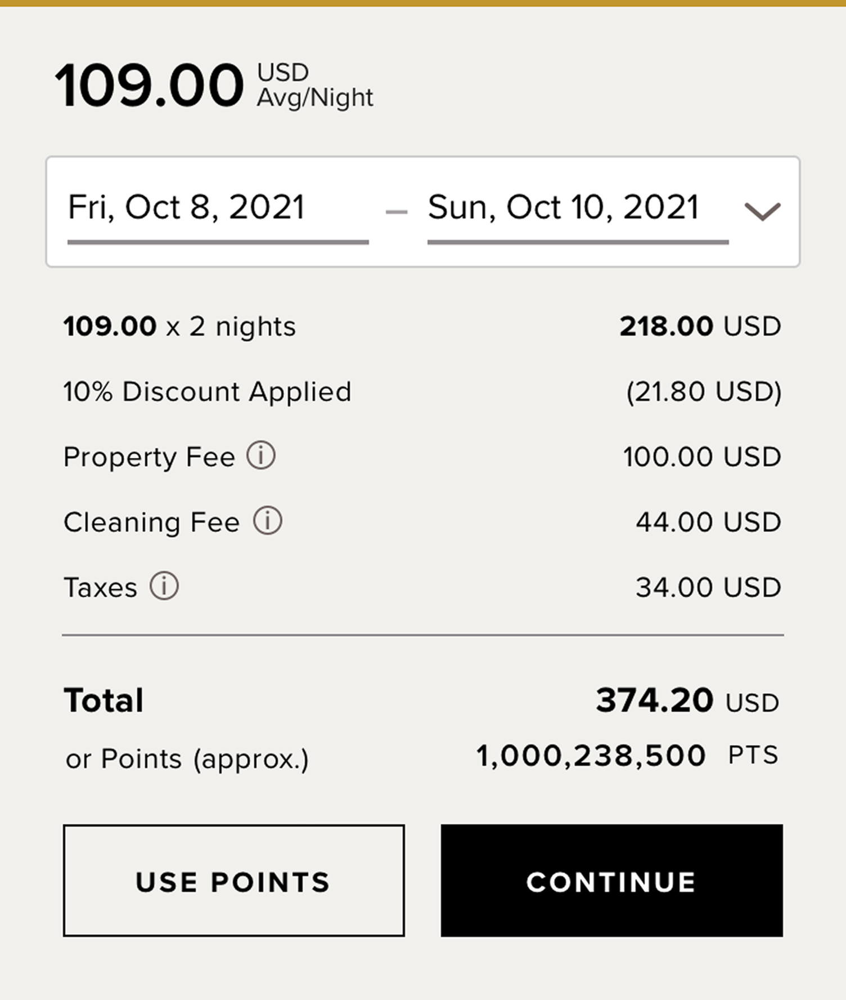
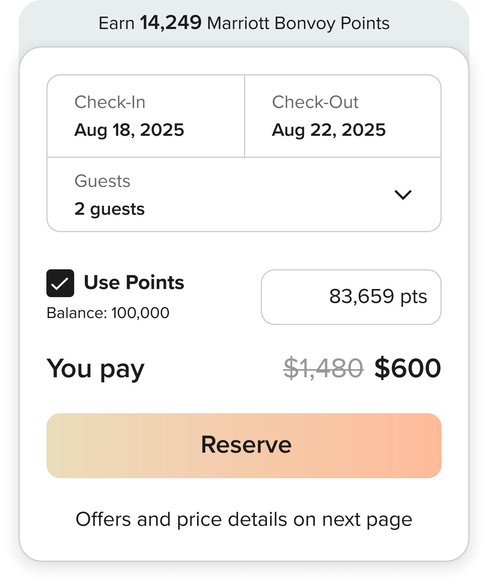
We made a big bet on progressive disclosure.
Influencing behavior
The right nudge, at the
right time.
Property pages earned labels like Top Pick and Going fast, tied to real booking velocity and availability. The calendar prompted at the exact moment guests were choosing dates. Gentle pressure, never manufactured scarcity.

The booking page
Every slippery funnel needs a sticky booking page.
We cut the language that didn't earn its place and moved multi factor authentication behind the Pay Now button, so there's no friction before commitment. Then we brought decisions onto the page. Dates, guest count, points, and offers are editable in place, and the gallery carries through for one last look.
The only remaining action is to book.
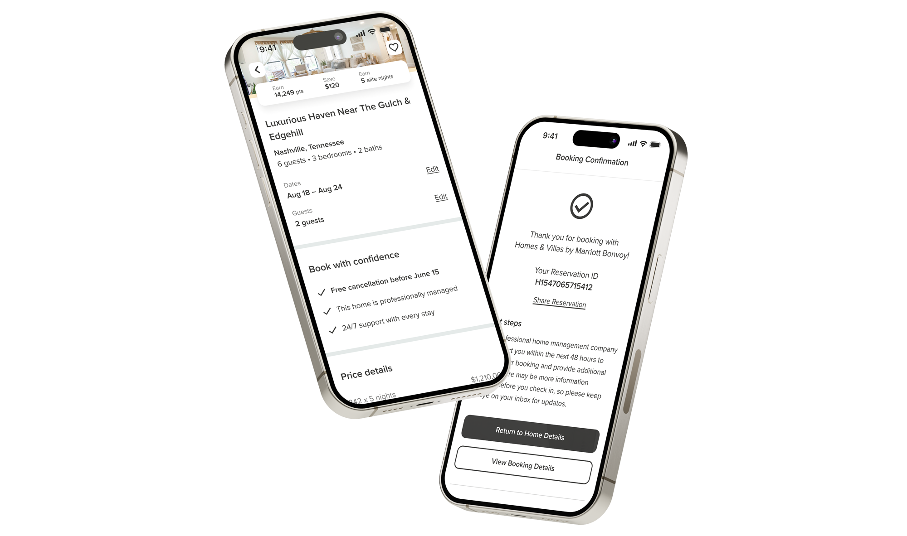
Booking Funnel
Mobile step conversion, property page to booking page. Desktop followed at 91%.